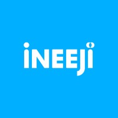

Yelim Lee
이예림 · Undergraduate, Ajou University

Ajou University, Suwon
I am an undergraduate student majoring in Software and Computer Engineering at Ajou University. I am currently an AI Research Intern at INEEJI, and an undergraduate researcher at Ilab advised by Prof. Kihyung Kim.
My research interests lie at the intersection of AI and finance. Currently, I focus on blockchain anti-money laundering (AML), explainable AI for financial anomaly detection, and LLM agents for financial decision-making.
소프트웨어학과에서 공부하며, 데이터 · 블록체인 · AI로 금융 문제를 연구합니다. 배운 것을 제 언어로 풀어내는 것을 좋아해 기술 블로그를 운영하고 있습니다.
news
| Sep 2026 | Joined INEEJI as an AI Research Intern, working on weather-forecasting AI agents. |
|---|---|
| Sep 2026 | Our team received the Excellence Award at the 8th KB Future Finance AI Challenge 🎉 |
| Mar 2026 | Started as an undergraduate researcher at Ilab, Ajou University (blockchain anomaly detection). |
| Dec 2025 | TRACE-X received the Excellence Award in the research track at AJOU SOFTCON 2025-2. |
| Jul 2025 | Selected for the Student Startup 300+ program (Ministry of Education & MSIT) with Trusticket. |
experience
-

AI Research Intern, INEEJI Sep 2026 – PresentAlphaWeather — AI assistant for weather forecasters- Improved weather-chart reading via color separation & brightness preprocessing (location matching 17% → 81.6%)
- Fine-tuned Gemma with tool calling in an air-gapped environment toward a chart-type-agnostic model
- Built a rubric-based VQA dataset to improve generation accuracy
-
Undergraduate Researcher, Ilab Mar 2026 – PresentAjou University · Advisor: Prof. Kihyung Kim
- Anomalous transaction detection on blockchain networks
-
 Reporter | Financial Friends Mar 2026 – PresentFinancial Services Commission (금융위원회)
Reporter | Financial Friends Mar 2026 – PresentFinancial Services Commission (금융위원회)- Producing 7 policy explainer videos for the FSC YouTube channel (ongoing)
- Topics: security tokens, illegal crypto-asset operators, single-stock leveraged products
-
Member, Blockchain at Yonsei (BAY, 16th) Jul 2025 – Jun 2026Development & Research Team
- Led crypto-monitoring sessions; studied DeFi/AML trends
- Articles on Yonsei Blockchain Lab (Medium):
-
Founder, Paletting Aug 2023 – Dec 2023Values-based matching platform
- Designed survey-driven matching algorithm; led a team of 4
- Acquired 150+ users via social media marketing
selected projects
-
KB AI

-
SOFTCON

-
SOFTCON
 XAI-AML: Explainable Suspicious Transaction Detection and Automated STR Report GenerationAJOU SOFTCON 2025, SW Fundamentals Track, Grand Prize
XAI-AML: Explainable Suspicious Transaction Detection and Automated STR Report GenerationAJOU SOFTCON 2025, SW Fundamentals Track, Grand Prize
other projects
- Blog Study Certification DApp (with DAO) — smart-contract based proof-of-study and deposit management. [code]
- Dividend Stock Simulation — dividend investing simulation and portfolio optimization. [code]
- Car-ia — blockchain-based P2P car-sharing platform with KRW-stablecoin payments. [video]
- Christmas Rolling Paper — collaborative message-board web app. [code]
awards & honors
| 2026 | Excellence Award, 8th KB Future Finance AI Challenge |
|---|---|
| 2025 | Excellence Award, AJOU SOFTCON 2025-2 (Research Track) |
| 2025 | Award, Paran Semester Program (Team 말해뭐해, TRACE-X) |
| 2025 | Grand Prize, AJOU SOFTCON 2025 (SW Fundamentals) |
| 2025 | Excellence Award, 5th SW Convergence Startup Camp |
| 2024 | 4th Place, Future Library Policy Idea Hackathon |
education
-
Ajou University Mar 2023 – PresentB.S. in Software and Computer Engineering
-
AJOU × AWS Cloud Camp Mar 2026Completed · Cloud9, Lambda, EC2
skills
- Languages
- Python, JavaScript/TypeScript, Java, C/C++, Solidity, R
- ML / Data
- scikit-learn, LightGBM, SHAP, Pandas, NumPy
- Web / Infra
- React, Next.js, Node.js, MySQL, AWS, Git
The best way to reach me is via yelim2849@gmail.com.